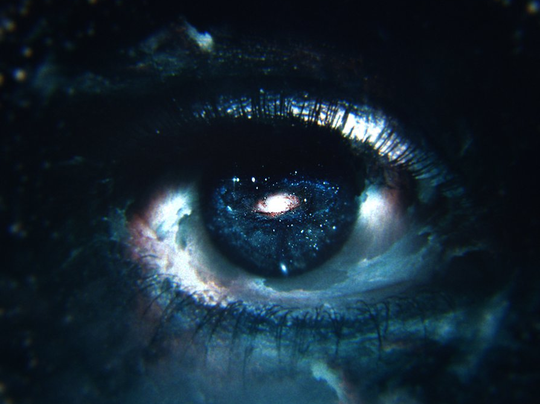

Ch.2
먼 우주에서 무언가를 발견했다.
아무 것도 없음을 발견했다.
먼 우주에서 무언가를 발견했다.
아무 것도 없음을 발견했다.
내가 가상 세계로 옮겨간 결정이 잘 이해가 되지 않을 수도 있을 것 같아. 여러이유가 있지만, 특별히 나의 트라우마가 결정적이었다고 봐. 그 트라우마는 아버지에 대한 트라우마. 아버지는 천문학자이자 우주비행사였어. 아버지는 우주와 외계 생명체를 동경했고, 우주에 외계 생명체가 있을 거라는 그 믿음 하나로 모든 삶을 우주 연구에만 투자하셨지. 오로지 연구에만 매진하다 보니 가정에는 소홀하셨어. 결국에는 일찍이 가정을 버리고 오랫동안 기약 없는 탐사를
떠나셨어.

비교적 아버지에 대한 기억은 뚜렷해. 함께 했던 시간도 적은 것은 아니었어. 여행도 다녔고, 꽤 많은 얘기도 나눴었지. 하지만 아버지가 나를 바라보는 눈동자에는 내가 없다는 사실을 어릴적부터 인식했던 것 같아. 아버지가 언제나 우주를 향한 갈망에 가로잡혀 나를, 가족을 진심으로 대하지 않는다는 사실을 말이지. 수단으로 사용되는 도구도 아니었어. 말그대로 아버지의 세계에는 내가 없었던 거야. 아버지의 생활세계에서 나는 의미있는 대상으로 구성되지 못한
것이지.
의미 자체가 없었던 존재.
그렇게 아버지는 탐사를 떠났고, 몇 년 뒤에 탐사선이 실종됐다는 소식을 듣게 돼. 그리고 마지막 메시지를 받게 되지.
“먼 우주에서 무언가를 발견했다. 아무도 없음을 발견했다.”
이 메시지를 받은 나는 아무런 감정을 느낄 수 없었어. 뭔가 슬픔과 불안을 느끼고 싶은데 초연해졌어. 오히려 아무런 감정이 들지 않는 내 모습을 보고 내가 많이 망가져있구나 싶었어. 순간 ‘다 아버지 때문이다.’라는 생각이 불현 듯이 떠올랐어. 사실 나는 망각하고 있었던 것이지. 어렸을 때부터 아버지에 대한 실망, 아버지의 무관심, 아버지가 했던 모든 언급이 진심이 아니었다는 사실이 어설픈 자아를 가진 나에게도 무의식적으로 분노의 대상이자 트라우마로 자리잡고 있다는 사실을 자각하게 됐어.
인간에 대한 회의감. 나는 그렇게 아버지에 대한 의문과 트라우마를 가지고서 아버지라는 존재를 나의 삶에서 점차 지워나가려고 노력했어. 그 과정에서 나는 친구와 가족 모든 인간관계에게까지 깊은 허무함을 느끼게 됐고 거리를 두기 시작했지. 어차피 온라인에서 밖에 만나지 않는 학교 친구들이 무슨 의미가 있나. 가족도 각자 할 일이 바뻐 주말에 잠깐 얼굴 보는 정도인데 말이야. 내가 어떤 불안을 겪고 있고 무엇을 하고 싶은지 관심도 없는 데 무슨 가족이야.
사실 나는 정말 사랑받고 싶고, 인정받고 싶고, 도움받고 싶었어. 회의감이 든다 하더라도 본심은 두려움과 슬픔이었지. 사람에 대한 불신은 커져갔지만, 마음 깊숙한 곳에선 사람에 의존하고 싶다는 욕구 또한 강하게 올라왔어. 이 모순을 해결하려고 나는 극단적으로 사이버 세계에 몰입하게 된 것 같아. 그렇게 몇 년을 지내니까, 이제는 사이버 세계가 나의 고향이 됐고, 그곳에서만 안식을 느끼는 사람이 되어버렸어. 그곳에서는 깊은 교제를 나눌 필요가 없고
상처를 받을 필요도 없고 나의 필요에 따라서만 관계를 가질 수 있기 때문에 말이지. 심지어 나와 관심사가 같은 사람들을 만날 수도 있거든.
이렇게 현실 세계에서 극심한 이질감과 위화감을 느끼던 나에게
파타파직스 세계에로의 초대는 이상한 나라의 엘리스로 가는 길이라고 여겨졌어.
오히려 나에겐 가상 현실로 들어가는 것이 빨간 약을 먹는 것이었어.
별다른 고민 없이 지원을 하게 됐고, 비트 세계에로의 영원한 이사를 오게 된 것이지.
파타파직스 세계에로의 초대는 이상한 나라의 엘리스로 가는 길이라고 여겨졌어.
오히려 나에겐 가상 현실로 들어가는 것이 빨간 약을 먹는 것이었어.
별다른 고민 없이 지원을 하게 됐고, 비트 세계에로의 영원한 이사를 오게 된 것이지.